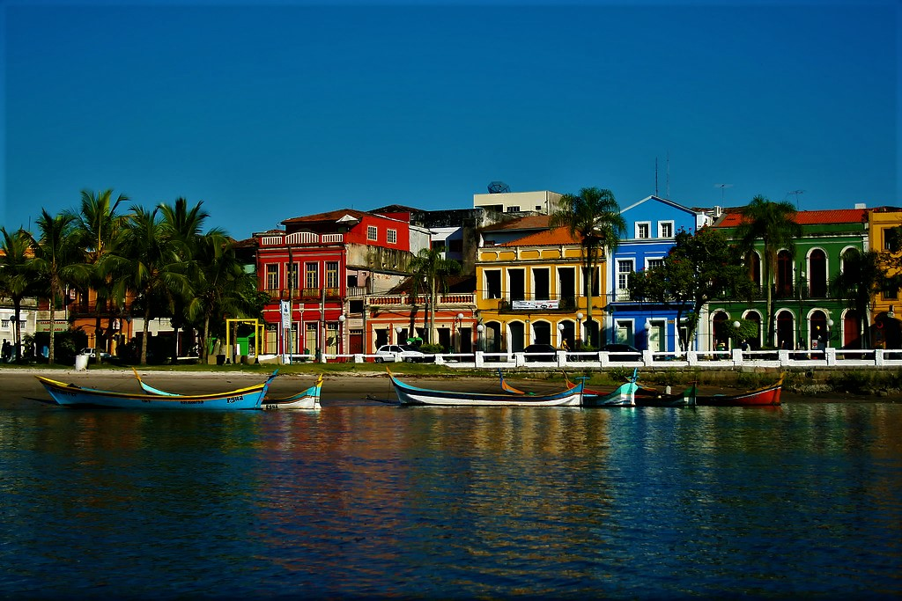

ESCOLHA DO IGORCentro Histórico
O Centro Histórico de Paranaguá não se limita a um único ponto, mas abrange uma área que reúne parte importante da história e da identidade da cidade. Suas ruas e construções antigas convivem com igrejas, museus, teatros, cafeterias, restaurantes e outros espaços que tornam a região um lugar cheio de vida e personalidade.
Caminhar pelo Centro Histórico é entrar em contato com o passado e sentir orgulho da riqueza cultural de Paranaguá. Sua arquitetura marcante, suas histórias e sua atmosfera tranquila tornam esse lugar especial para quem aprecia a beleza e as tradições da cidade.